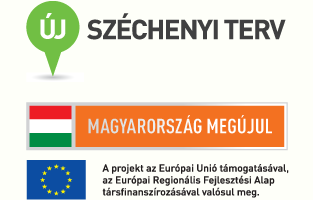

Projekt azonosító száma: KFI_16-1-2017-0255
Vállalatunk a Holofon Zrt, mint a műanyag újrahasznosításban hazai egyik piacvezető vállalkozás jelentős tapasztalattal rendelkezik az újrahasznosítás területén, ezért elképzelésünk szerint a „Széles gazdasági felhasználású extrudált termék prototípus kialakítása hulladék újrahasznosítással készült receptúrák megalkotásával és kísérleti gyártósor alkalmazásával” c. projektben létrejövő termék prototípusának előállításához újrahasznosított hulladékot tervezünk felhasználni. Az innovatív hulladék felhasználási elképzelésünkkel a hazai feldolgozóiparban teljesen új feldolgozási terület előtt nyitnánk meg a kaput.
A projekt során, a kereskedelmi forgalomban kapható WPC /fa, műanyag kompozit/ termékek alapanyagának, töltőanyagának és feldolgozási technológiájának újragondolása történik annak érdekében, hogy a termék olcsóbb - ezáltal szélesebb körben felhasználható a hagyományos anyagból készült termékek kiváltására alkalmas legyen.
A projekt elsődleges céljának eléréséhez, a műanyagipar anyagfelhasználást – alapanyag, töltőanyag, energia, káros anyag kibocsátás- ökológiai szempontból is jelentősen javítjuk. Emellett, a termék prototípus kialakításával, számottevően csökken a fosszilis anyagfelhasználás a gazdaság más területein is.
A kialakuló ipari kutatási és kísérleti fejlesztési eredmények általános társadalmi hasznosíthatósága is fontos szempont. Mindez elősegíti a környezettudatos ipari gondolkodásmód elterjedését, mind Magyarországon, mind a nemzetközi szinten is. A gyártási eljárásban létrehozott innovációval az előállítási folyamat ideje jelentősen lecsökken, ezzel egyszerűsödik, csökken a karbantartási kiesés, és jelentős energia megtakarítást is eredményez.
A projekt összege nettó 245.900.000 Ft forint, ebből vissza nem térítendő támogatás nettó 127.950.000 Ft forint. A Vállalatok K+F+I tevékenységének támogatása c. pályázatot a Nemzeti Kutatási, Fejlesztési és Innovációs Hivatal írta ki, a vissza nem térítendő támogatást a Magyar Állam nyújtja. Ez a pénzügyi keret jelentősen hozzájárulhat, hogy a jelen kutatási eredmények alapján létrejövő technológia, mint know-how, ill. a prototípus is külön-külön innovációs értéket képviseljen.
Projekt azonosító száma: GINOP-1.3.1-15-2015-00316

A projekt indítását követően elkészül a vásárhoz, árubemutatóhoz kapcsolódó tanácsadás, piackutatás és kampányterv, elindul a Google AdWords kampány több nyelven. Kialakításra kerül a www.hubform-products.com honlap német, és angol nyelven., a közeljövőben tervezik még a horvát vagy cseh nyelvet is.
Elvégzésre kerül továbbá az innovációs tanácsadás, újdonságkutatás és technológiai benchmarking, illetve elkészülnek a honlaphoz, marketineszközökhöz és termék logóhoz kapcsolódó grafikai tervek.
A projekt keretében 2017. április 4-7. között cégünk részt vesz az EMAT horvátországi nemzetközi vásáron, továbbá a 2017. október 9-13. között megrendezésre kerülő Envitech csehországi nemzetközi vásáron kíván megjelenni, ahol bemutatásra kerülnek a Hubform termékek és felhasználási lehetőségei
2017. augusztus 14-15. között árubemutatót szervezünk az németországi Erdingben, ahol sajtótájékoztatót is tartunk.s és készségek megszerzését, amely által a cégen belül, ill. a munkaerőpiacon is sikeresebbé válnak.
Projekt azonosító száma: PM_KKV_2016/187
A projekt célja, hogy cégünk székhelyén egy biztonságos, belső úthálózat kerüljön kiépítésre, mely az üzem hatékonyságát nagymértékben növeli. Továbbá a projekt keretén belül kivitelezésre kerül az I. csarnok tetőfedésének cseréje, azbesztmentesítése, valamint a II. csarnok homlokzatának felújítása. Beszerzésre kerül egy hídmérleg, mely biztosítja az ellenőrizhető anyag be- és elszállítását.
Projekt azonosító száma: VEKOP-1.3.1-16-2017-00118
A projekt indítását követően elkészül a vásárhoz, árubemutatóhoz kapcsolódó tanácsadás, piackutatás és kampányterv, elindul a Google AdWords kampány több nyelven. Kialakításra kerül a www.hurepro.com honlap szerb, szlovák és angol nyelven. Elvégzésre kerül továbbá az innovációs tanácsadás, újdonságkutatás és technológiai benchmarking, illetve elkészülnek a honlaphoz, marketineszközökhöz és termék logóhoz kapcsolódó grafikai tervek.
A projekt keretében 2018.01.31-02.03. között cégünk részt vesz a Samuplast olaszországi nemzetközi vásáron, ahol bemutatásra kerülnek a HUREPRO termékek és felhasználási lehetőségei.
2017.11.16-17. között árubemutatót szervezünk a szerbiai Belgrádban, ahol sajtótájékoztatót is tartunk.
Projekt azonosító száma: GOP-1.1.1-11-2012-0361
Magyarországon a szelektív gyűjtés elterjedésével és a házhoz menő szelektív gyűjtési rendszer kiépülésével a közeljövőben jelentősen megnövekszik a mosó-, mosogatószeres illetve öblítős flakonhulladékok mennyisége. Az ilyen típusú hulladékok eddig főként hulladéklerakóba kerültek, ahol a hosszú lebomlási idejük miatt évszázadokra szennyezték a környezetet. A visszagyűjtési rendszernek azonban csak akkor van értelme, ha a begyűjtött hulladékok hasznosíthatóak, ismét termék készíthető belőlük. A háztartásokból kikerülő flakonok tisztasága nem megfelelő, ezért szükséges kívül-belül megtisztítani a felületüket. A flakonok őrleményként való mosása a leghatékonyabb eljárás a szennyeződések eltávolítására. Magyarországon ezt a hulladékfrakciót általában hulladéklerakókban helyezték el, vagy energetikai hasznosítás céljából hulladékégetőműbe vitték, így visszanyerve magas energiatartalmának egy részét.
A Holofon Zrt. profilja a műanyag hulladékok hasznosítása, másodnyersanyag előállítása. A vállalatunk megalakulása óta elkötelezett a környezetvédelem iránt, így a folyamatos technológiai fejlesztéseket is ennek szellemében valósítjuk meg.
A szelektív rendszerbe bekerülő flakon hulladékok jellemzője, hogy válogatás után nagyrészt polietilén és polipropilén (poliolefin) tartalmúak, amelyek őrleményként együttesen is feldolgozhatóak. A poliolefinek sűrűsége kisebb a víznél, ezért a víz felszínén lebegnek. A megfelelő mosási technológiával így egyszerre két művelet is végrehajtható: a hulladékok tisztítása illetve a poliolefinek szétválasztása egyéb más polimerektől.
A 3M K+F projekt célja egyrészt, hogy a szelektív gyűjtésből beérkező vegyes flakon hulladékot darálás után egy lépésben mossuk, illetve szétválasszuk a számunkra hasznos poliolefineket az egyéb polimerektől. A poliolefinektől különböző frakciók hulladéklerakóba vagy égetőbe kerülnének, de a saját fejlesztésű technológiánkkal új, eddig a piacon ismeretlen termékek előállítására használhatók fel, ezzel minimálisra csökkentve a technológiából kikerülő hulladék mennyiségét.
A 3M K+F projekt másik fontos célja, hogy a mosási és szeparálási technológiában felhasznált víz mennyiségét minimálisra csökkentsük a felszíni és felszín alatti vizek védelmében. A mosási folyamat végén olyan tisztítási módszert alkalmazunk, amely lehetővé teszi a felhasznált mosóvíz minél hosszabb idejű forgatását a rendszerben, így csak az elpárolgott víz mennyiségét kell pótolnunk. A tisztítási folyamatból kikerülő, döntően papírtartalmú „lepény” melléktermékként energetikai hasznosításra kerül.
A K+F feladat végrehajtásával olyan technológiai- és termékfejlesztést valósítunk meg, amelynek eredményeképpen a beérkező hulladék szinte teljes mennyiségéből új piacképes termék gyártása valósul meg, illetve a tisztításhoz felhasznált mosóvizet megfelelő tisztítás után visszaforgatjuk a rendszerbe. Az előállított termékeket (HUBFORM termékcsalád) és az alkalmazott technológia egy részét újdonságtartalma miatt szabadalmaztatni kívánjuk.
A teljes K+F eredményének eléréséhez rész K+F tevékenységek tartoznak.
A K+F tartalom megvalósuláskor: szabadalmi technológia
A K+F tartalom megvalósuláskor: eddig hasznosításra alkalmatlan alapanyagból, töltőanyaggal keverve termék készül
A K+F tartalom megvalósuláskor: az anyagból regranulátum készül.
Projekt azonosító száma: HEFOP-3.4.1/05/1.-2006-05-0029/2.0
Az Európai Unió által társfinanszírozott projekt
A projekt keretén belül a Holofon Zrt. 9 alkalmazottja számár 6-féle képzést biztosít az ismereteik széleskörű bővítése és a naprakész munkavégzés érdekében. A képzések között található a könnyűgépkezelői, angol nyelvi illetve számítástechnikai oktatás, amelyek keretein belül több modul ismeretanyagai kerülnek átadásra, úgy, mint áruforgalmi, készleti, főkönyvi és pénzügyi. A két utóbbi modul szerződésmódosítás keretén belül fog bekerülni a projektbe. A Holofon Zrt. munkatársai számára az oktatás és szakképzés elengedhetetlen fontosságú a cég versenyképességének fenntartásában. Munkavállalóink a képzéseknek köszönhetően hatékonyabban és szakszerűbben láthatják el feladataikat. A képzéseket követően szaktudásuk biztosabbá válik, a munkavégzéshez való viszonyuk jelentősen javul. A vállalat szempontjából ugyanakkor a képzettebb dolgozó garanciát jelent a szakszerűbb munkavégzésre, a hibalehetőségek és az azokból fakadó esetleges károk csökkentésére. A munkavállalók számára a képzések biztosítják a versenyképes tudás és készségek megszerzését, amely által a cégen belül, ill. a munkaerőpiacon is sikeresebbé válnak.
Projekt azonosító száma: KMOP-1.2.1/B-2007-0103
A projekt az Európai Unió támogatásával, az Európai Regionális Fejlesztési Alap társfinanszírozásával valósult meg.
A projekt keretében 4 tevékenységet végzünk: gép és informatikai eszköz beszerzés, képzés és piacra jutás.
Eszközbeszerzés: univerzális előaprító gépet vásároltunk a műanyag hulladékok újrafeldolgozásának elősegítésére (a műanyag hulladékokat aprítja, hogy tovább lehessen feldolgozni azokat). Cégünknél az előaprító gép nélkül a kibocsátást már nem tudjuk növelni. A termelés és az árbevétel növekszik, hozzájárul a fenntarthatóság és a projekt hosszú távú céljaihoz így a vállalkozás fejlődését is elősegíti.
Informatikai fejlesztés: 5 notebookot szoftverekkel együtt szereztünk be az árbevétel növelése érdekében. Ezek szükségesek a termékek értékesítésénél és a szemléletesebb prezentációk készítésénél, amiket a vevőink számára is elérhetővé teszünk. Ennek köszönhetően növekszik az árbevétel és új vevőkkel léphetünk kapcsolatba, ami a cég hosszú távú fennállásához elengedhetetlen fontosságú.
Piacra jutás: 2007. 11. 6-9. között megrendezésre került az ÖKOTECH kiállítás, amelyen megjelentünk. A kiállításon a részvétellel újabb vevőkhöz juttattuk el a termékeket; bevétel növekszik, a fenntarthatósághoz hozzájárul.
Képzés: 2-2 fő részére hatékony menedzsment gyakorlott vezetőknek (5 napos), munkahelyi konfliktus és stressz kezelés (3 napos) és tárgyalási technikák alkalmazása a vezetésben (4 napos) tréninget tartottunk. Mindezek mellett folyamatos nyelvi képzésben részesítjük munkatársainkat, így a külföldi partnerekkel való kapcsolatfelvétel egyre inkább zökkenőmentes.
Az eszközök környezetkímélő BAT technológiájúak. Az előaprítógép az MSZ és a vele egyenértékű szabványoknak: környezet-, munka- és balesetvédelmi előírásoknak megfelel. Az informatikai eszközök rendelkeznek TCO'03 monitor és APM csökkentett energiafelhasználási előírásokkal. A kiállításokon való részvételnél és a képzéseknél a pénzért értéket elvet tartjuk be. Minden fent említett előírás és szabvány esetében az eszközök átvételekor igazolást kérünk a szállítótól.
Az UNI-CUT 105 univerzális előaprítógép rendszere automatikus zavaróanyag felismeréssel rendelkezik, a fémrészeknél automatikusan megáll. A polygonból kialakított rotortengelyek és speciális késformák gondoskodnak az optimális erőközvetítésről, ami magas metszési teljesítést ad. A gép rotorja erőteljes, és tartós: 70 000 üzemi órát bír. A robosztus, magas élettartalmú és zajszegény vágókések egymás felé forduló ollótengelyekkel rendelkeznek. Az anyagokat automatikusan beszippantja. Gazdaságos és energiatakarékos, elektromosan vezérelt visszaszállás, automatikus visszaadás a gép túlterheltsége esetén. A gép beszerzése kettő új munkahelyet teremt és 3 munkahely megőrzéséhez hozzájárul.